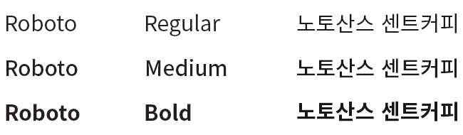
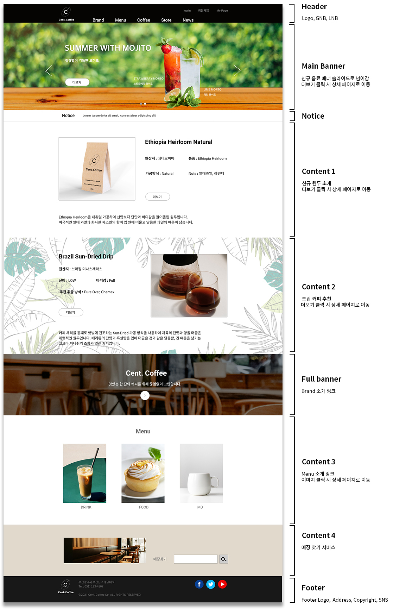
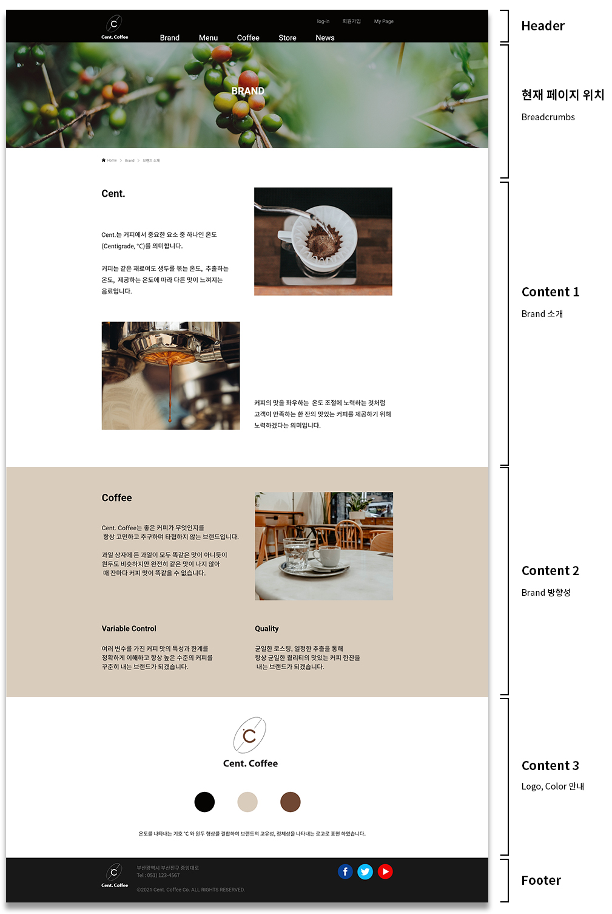
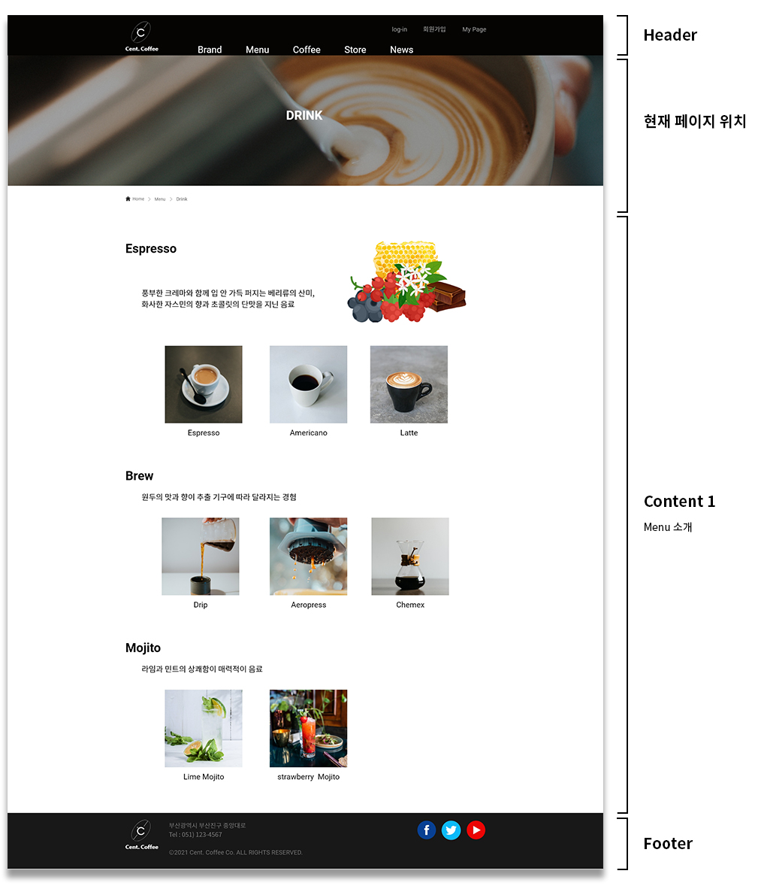

Design by Dongmin Park
2021.07
Web Design Style Guide
Coffee Brand Site

최상의 퀄리티가 맛있는 한 잔의 커피를 만듭니다
Design by Dongmin Park
2021.07
Web Design Style Guide
Coffee Brand Site
최상의 퀄리티가 맛있는 한 잔의 커피를 만듭니다
Cent. Coffee는 원두와 커피를 판매하는 커피 브랜드입니다.
Cent.는 커피에서 중요한 요소인 온도(Centigrade, ℃)를 의미합니다.
커피는 같은 재료여도 생두를 볶는 온도, 추출하는 온도, 제공하는 온도에 따라 다른 맛이 느껴지는 음료입니다.
커피의 맛을 좌우하는 온도 조절에 노력하는 것처럼 고객이 만족하는 한 잔의 커피를 제공하기 위해
노력하겠다는 의미입니다.
무게감이 있고 전문적인 느낌을 주기 위해 블랙 계열을 메인 컬러로 정하였습니다.
커피와 비슷한 색감이며 부드러운 느낌을 주기 위해 브라운 계열의 색을 사용하였습니다.
#050402
#181818
#d9ccbc
#b6a088
#704733
가독성이 좋으며 깔끔한 이미지를 주기 위해 영문은 Roboto, 한글은 Noto Sans KR를 사용하였습니다.
main page
sub page
sub page
